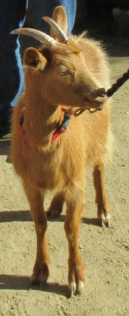

San Antonio, Texas, USA.
lé 18 dé févri, 1984.
"Est-ch' vrai qu' eune biche peut mangi un chapé d'paille?", jé d'mandis à Papa eune séthée quand j'tions à l'entou d'l'âtre y'a eune huiptantaine d'années.
"Ma fîngre, j'n'en s'sais pon ravi!" i' m'dit. "Mais tch'est tch'i' t'fait mé d'mander d'ité?"
"Eh bein," j'lî dis, "Jean Badgi, tch'est dé m'n âge, mé dit hièr qué san papa a un vièr bichot, tchi mange autcheune chose, et qu'eune fais il avait un bieau chapé d'paille appelé un 'Panama', viyant qu' la paille veint d'un pays appelé d'même et qu'oulle est la miyeuthe tchi piêsse y'aver pour faithe des chapieaux. Ch'tait un n'veu tch'est naviguant tchi li'avait env'yé d'là-bas pour san Noué. Eune fais i' n'pouvait pon l'trouver, mais quand i' nettit l'êtabl'ye il en trouvit des mios dans la stâle du vièr bichot. Et il est seux qué l'bichot avait mangi san chapé."
"Ch'est bein probabl'ye,'. Papa m'dit.
"Mais les biches né souffrent pon d'îndigestion, don?", j'lî dis.
"Appathemment qu'nan," i' m'dit.
"Mais t'n histouaithe mé ramémouaithe tchiquechose entouôrre eune biche. J'vouos ai tchiquefais raconté d's histouaithes dé quand j'navidgais et tch'i' y'avait des cap'taines tch'avaient des drôles d'idées. Eh bein, lé Cap'taine Le Veslet d'un trais-mâts tch'allait à Buenos Aires en 'tait iun. Il avait l'idée qué du lait d'biche valait mus qué du lait d'vaque. I' criyait même qué ch'tait eune bouanne méd'cinne pour èrdgéthi bein des maux.
"Comme lé navithe s'en allait êt' longtemps en mé, il emm'nit eune biche à bord pour aver san lait duthant lé viage. I' fît l'tchèrpentchi li bâti eune stâle sus l'pont et un empliaichement à côté pour sa nouorrituthe, car il en fallait eune bouanne cartchaîthon pour un long viage.
"Les matelots en 'taient enorfantés, car lé Cap'taine ordonnit qué châque homme dé l'êtchipe prange san tou à souangni la biche et la promener sus l'pont touos les jours quand l'temps 'tait bé, et la traithe et porter l'lait à la caboûthe. La stâle 'tait près du châté, et quand même qu'ou fûsse nettie touos les jours, y'avait acouo eune cèrtaine odeu tchi n'èrsembliait pon à dé l'ieau d'Colongne! Mais chein tchi les faîsait mârri acouo pus 'tait qué l'Cap'taine lus ordonnit d'béthe eune modgie du lait d'la biche touos les jours pour lus garanti bouanne santé. A c'menchi, i' d'valaient dans l'châté atout lus modgie d'lait et pis l'quart dé niet l'env'yait houors bord. Quand l'Cap'taine s'en apèrchut i' fît l'Contrémaître l's assemblier à la caboûthe touos les sièrs atout lus modgie d'lait. Et pis i' s'y présentait li-même pour les faithe lé béthe en sa présence. Lé Contrémaître avait à l'béthe étout, et i' n'l'aimait pon, mais pour les encouothagi, lé Cap'taine en b'vait eune modgie étout.
"Lé Contrémaître, tch'avait à ouï les pliaintes dé l'êtchipe touos les jours, en avait pliein ses braies, et Bouan Dgieu sait combein longtemps qué ch't êtat d'choses éthait duthé si la biche avait vêtchu. Mais la fîn d'l'embarras vînt pûtôt soudainement. Il' avaient 'té trais s'maines en mé quand la biche abanonnit d'sa stâle, ou s'gonflyit en mangeant eune cartchaîthon d'cârottes, et pis ou s'en fut vaie si y'avait tchiquechose à mangi à la caboûthe.
"Lé couque 'tait à laver sa vaisselle. Il 'tait baîssi, lé driéthe en haut, à scrober sa chaûdgiéthe. La biche li boutit l'driéthe et i' tchit, la fache dans la chaûdgiéthe. I' fît un brai tch'am'nit Cap'taine et Contrémaître et êtchipe sus les lieux. I' trouvîdrent la biche à litchi l's assiettes du dêjeuner et l'couque à s'frotter l'driéthe et s'laver la fache. Heutheusement, i' n'avait pon d'os rompus.
"Chutte séthée-là i' iut eune conféthence dans l'châté entouôrre la biche. Les jannes éthaient voulu la fliantchi houors bord, mais les vièrs naviguants 'taient d'bouan tchoeu et supèrstitieux et n'voulûdrent pon pèrmettre telle cruauté, don rein n'fut décidé. Et comme i' s'adonnit, la niet apportit la solution.
"Eune forte tempête, s'êlevant à l'împrévu, fît 'all hands and the cook' grîmper amont l'ridgage, et la biche fut oubliée. Lé lendemain au matîn ou fut trouvée morte dans sa stâle, engouée par eune grosse pânnais dans la gorge et gonfliée. La tempéte l'avait chavithée dans sa stâle, probabliément en mangeant, et v'là tchi l'avait faite s'engouer par accident.
"Pour soulagi la peine du Cap'taine, tch'en plieuthait, l'êtchipe ouffrîdrent d'en prendre lé deu, et la fanmeuse biche eut l'honneu d'êt' 'inhumée' en mé!"
Viyiz étout: